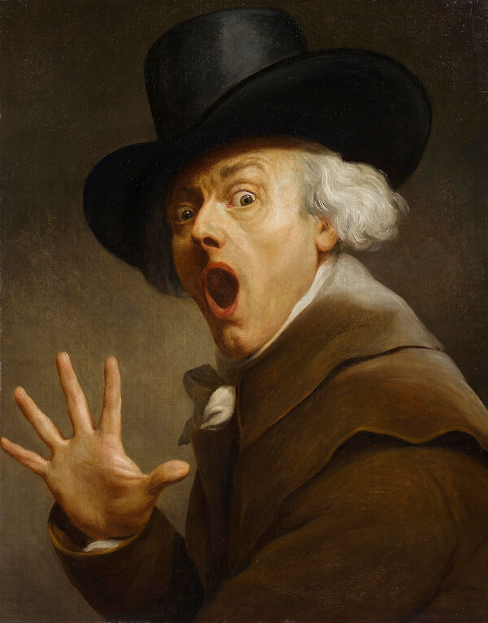

Résumé de Brilliance pour Le Maître de l'Ingéniosité

Summary:
Hark! Attend, ye noble lords and ladies, as I present unto thee, Joseph Ducreux, Esquire, a paragon of unparalleled brilliance in the realms of creativity and wit.
Education:
Master of Verbose Arts
École de l'Éloquence Brillante, Paris
Graduation Date: Anno Domini 1787
Bachelor of Witty Letters
Université du Rire Subtil, Lyon
Graduation Date: Anno Domini 1790
Work Experience:
Grand Maître de l'Écriture Facétieuse- Académie des Mots Malicieux, Versailles
Anno Domini 1791-1794
Revolutionized the art of humorous prose, introducing groundbreaking techniques in wordplay and linguistic jests.
Conducted masterclasses on the integration of mirthful metaphors and jestful jargon, inspiring a new generation of jesters.
Chief Quip Artisan- Château de Bon Mot, Provence
Anno Domini 1794-Present
Crafted and curated an extensive collection of puns, witticisms, and bons mots for the amusement of esteemed guests.
Orchestrated nightly performances of comedic interludes, establishing the Château as the premier destination for refined amusement.
Skills:
Artisan of unparalleled verbosity, skilled in the ancient art of loquacity and grandiloquence.
Connoisseur of jests and banter, capable of turning the mundane into the sublime with a mere flourish of language.
Pioneered avant-garde interpretations of classical works, transforming staid prose into lyrical tapestries of linguistic splendor.
A maestro of the surreptitious, elevating mundane conversations to the sublime heights of intellectual discourse.